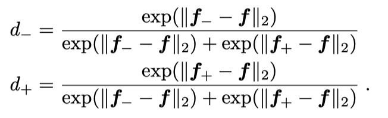
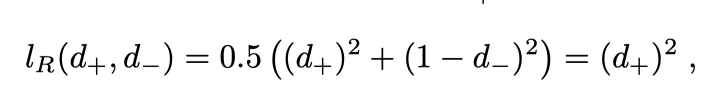
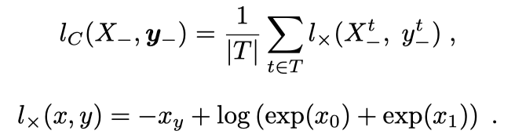
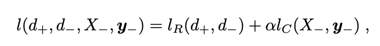
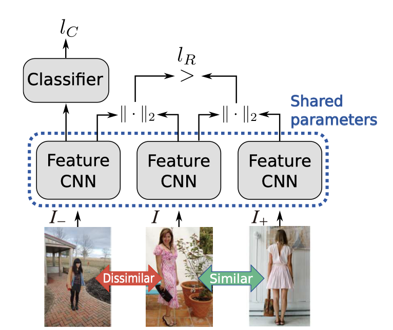
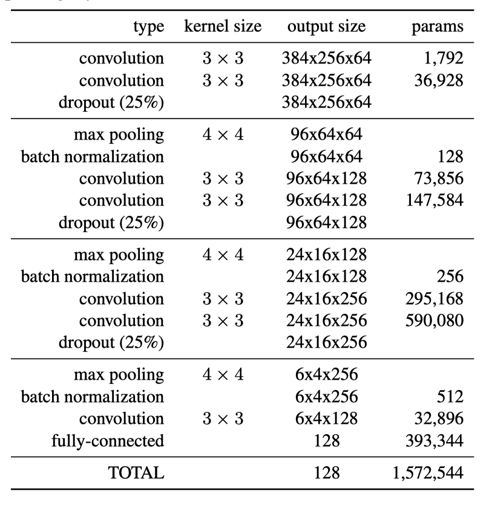
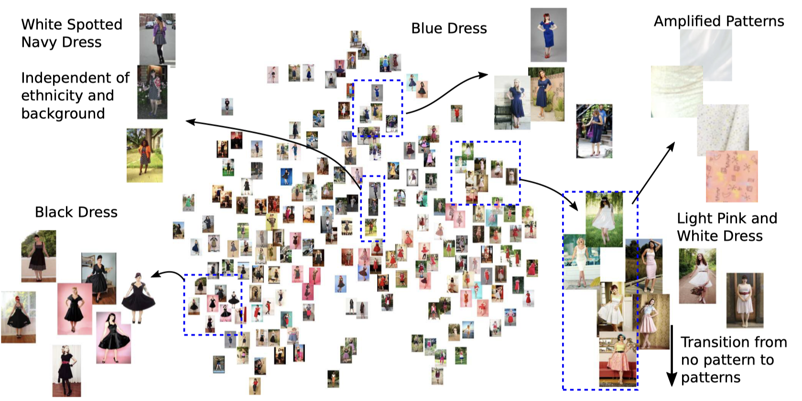

About
标题
Fashion Style in 128 Floats: Joint Ranking and Classification using Weak Data for Feature Extraction
128位单精度浮点数的时装风格：使用联合排名和分类的方法从弱标签数据中提取特征
发刊时间
2016年CVPR
作者
Edgar Simo-Serra 东京早稻田大学 基础科学和工程学院 副教授 （网站挺好看）
Hiroshi Ishikawa 东京早稻田大学 基础科学和工程学院 教授
Content
之前的相关研究
-
特征学习
- GIST：手动提取全局图像特征
- 完全监督的深度学习网络从大量数据中获得中间表征（intermediate representations）：缺点是泛化能力差
- 最开始的 Alexnet
- 有19层的 VGG
- 每层中联合使用大小不同的卷积的Googlenet
- Chatfield对不同网络分析，引入瓶颈层（bottleneck layers）来提供不同尺寸的特征
- 无监督学习：缺点是缺乏标签，使任务复杂
-
噪声标签/弱标签学习
- Xiao的方法需要50%的标签正确率，并且需要学习一个网络纠正噪音
- Frome使用图像+文本来训练有更多语义的分类器
-
深度学习相似性（Deep Similarity）
-
不学习分类网络，而是使用深度神经网络直接学习相似性（聚类？）
-
连体网络：单样本学习算法，一组输入被同时用来训练神经网络模型，损失激励相似的输入有相似的输出，不相似的输入有不同的输出，用于局部特征描述和获得产品图像表示
-
三重网络：是连体网络的扩展，被成功用于人脸识别中。也是本文三联体图像比较方法的基础
-
我们的目标
利用弱标签/嘈杂标签数据，用深度网络学习紧凑的判别特征，然后用于其他具有挑战性的时尚相关任务，如风格分类
由于最近（2012CVPR）才成为研究重点，所以本文将专注于时尚图像领域
存在的挑战
- 图像有些局部细节（如配饰）很难分割
- 要考虑全局的属性（如服装风格），这些属性共同决定图像中的各种物品
- 一般图像比例为3:4且颜色比较亮
没有大型的完全标注的数据集*（现在已经有了）*
实验方法
1. 联合排名和分类
排名
1）对于标签，计算两两图片的弱标签的相似性度量r，低于相似阈值的为相似标签，高于不相似阈值的为不相似标签
2）给噪音标签（labels）\(l\) 打标（tag），如果图像中含有该tag那就给相应的tag标记为1，没有就是0，$|l|$ 为每个label的tag=1数，利用每个图像的 $|l|$ 计算交并比（intersection over union）
3）对于图像，使用特征提取网络提取三联图像的特征向量 \(\tau_f = (f_-,f,f_+)\) 作为输入，比较特征向量的欧式距离并做归一化处理*得到 \((d_-,d_+)\) ，使用排名损失 \(l_R\) 激励 \(d_+\) 和 \(d_-\) ，使得相似的图像更相似，不相似的图像更不相似


想要 \(l_R = 0\) ，则需要 \(\parallel f_+-f \parallel_2 = 0\) 并且 \(\parallel f_--f \parallel_2 > 0\)
分类
0）虽然排名损失足以用来学习鉴别性的特征，但作者发现，用分类损失来补充是至关重要的
1）将不相似图像向量作为多标签分类器的输入（因为标准图像和相似图像要做训练集），得到一个给每个tag的值的预处理值 \(X_-\) ，使用多标签交叉墒误差

联合

\(\alpha\) 是平衡不同损失函数的权重，其中分类损失影响特征提取网络和分类网络，而排名损失只影响特征提取网络

2. 特征提取网络
依赖 Batch Normalization layers 学习，使用 Dropout 防止过拟合

注意点1: 图像比例是3:4的
注意点2: 使用的参数很少，只有1572544个，VGG16需要134260544个参数
3. 分类网络
分类网络的目标是帮助特征提取网络的学习，而不是高分类性能。只包含一个batch normalization layer和一个linear unit layer和一个128隐藏单元 linear layer和最后一个linear unit layer，结构简单，参数少
4. 联合训练
1）两个网络都用反向传播算法训练，利用ADADELTA算法自适应设置学习率。对于图像的预处理只有从每个颜色通道中减去平均值并处以标准差
2）初始化这两个网络，先用一个额外的全连接层训练分类的特征提取网络，一旦优化收敛，额外的分类层就会从特征提取网络中移除，分类网络则以随机权重加入
3）对于输入的图像来说，不可能计算出所有图像的相似度量值，所以随机选一个标准图像，然后抽一个图像进行比较，根据阈值判断正负样本，已有则再抽一个
实验结果和分析
1. 数据对比
- 与公开的预训练的CNN和最先进的风格描述符基线进行比较，优于所有基线
- 对时尚性的预测准确率指标上优于其他所有的方法
- 在所有情况下，联合分类和排名方法都优于单独使用分类或排名损失，以及使用连体结构
2. 通过描述符进行可视化
{kind=link}
通过显示规范和投射到主成分分析坐标系（PCA basis）上考虑整个风格描述符的输出
1）在输入图像周围滑动一个48×48的边界框，并计算输入图像的平均颜色，然后计算 风格描述符。
2）将得到的描述符与原始图像描述符进行比较，并将其变化可视化。
3. 风格匹配
同样使用风格描述符进行可视化，不只考虑单一图像，而是考虑成对图像，采用两个不同图像（ \(I_1\) 和 \(I_2\) ）特征向量之间的差异评估这个向量和风格描述符 \(f(\cdot)\) ，计算在像素位置(u, v)的一个局部遮挡。
这种局部异常相似性的概念是在没有任何像素级注释的情况下从嘈杂的用户提供的标签中自动学到的。
4. 时尚风格空间

使用t-SNE从风格描述符中提取出可视的时尚风格空间。风格描述符可以使用欧氏距离进行比较，图为Hipster wars数据集中“pinup”分类的时尚风格空间可视化
创新点
- 使用网络上常见的大量弱标签数据，主要来自Paperdoll和Fashion 144k
- 在较小的数据集上用较少的参数学习一个紧凑（128位）的模型
- 通过欧式距离，定性分析的视觉化补充定量分析。提出了新的特征提取方法和新的可视化方法